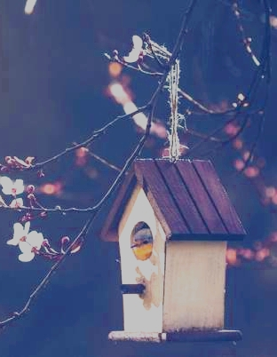

THESTORY
BETWEEN MY FAMILY我和我的家人
我小时，家里真的是很贫穷，为了养活我们一家人，爸妈出去打工留下我在老家，因此我也就成了大家口中的留守儿童中的一员。小孩子是最单纯的，有什么样的生活就怎么样过，而我也是顺其自然的过着我的童年。
那时我有两个去处，一个是我爷爷奶奶那儿，一个是我外公外婆家。我奶奶是一个很淳朴的农村人，很善良，对我的好就像细流一样，没有轰轰烈烈，只有润物无声，在她身边你就好像真的是一只快乐的小鸟。我知道她会是我这一生无比牵挂的人，感谢早已不足以道出我对她的情感。而进入我外婆家，仿佛就进入了另一个世界。两个家庭，两种环境，让我的一个童年体味了两种味道。
小时对于苦与乐，没有什么客观的看法，只有主观的感受，而且也不会去深究这些经历是否会对我造成什么影响。而随着年龄的增加，学到的一些知识让我开始怀疑我小时的经历，开始遗憾父母角色在我过去生活中的缺失，也开始讨厌父母为什么要丢下我一人独面生活，让我早早就如此独立。太多的抱怨开始填充我的思想，在我脑袋中发酵。那时我一方面讨厌父母，一方面讨厌自己。
那些思想折磨了我几年，却也让我逐渐成长。也许现在的我真的有受到小时的生活的影响，但也不能把责任完全的推到别人身上，因为只有自己是应该为自己负责的。你能否成为一个阳光的、善良的、美丽的人，只在于你自己的选择。生活与心中，我皆与我父母和解。最后想说，宽恕别人才是宽恕自己。